本文仅用于技术学习、交流，切莫用于非法用途，读者的一切行为后果自行承担。
签名整体分析
去除监听事件干扰
做完插桩处理后，刷新页面。
然后首先看下 trance_I，会发现调用了几次 addEventListener，设置了鼠标和键盘相关的几个事件，回调函数是 _YL。
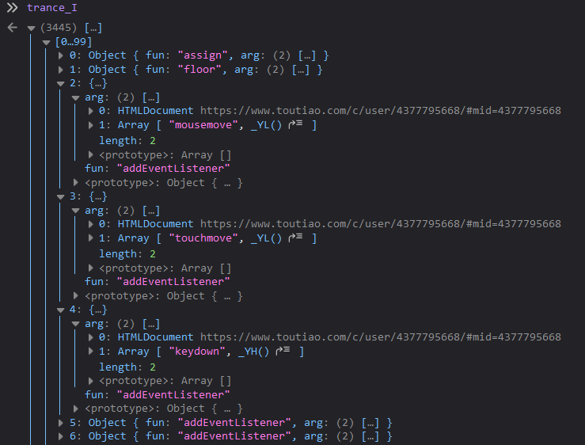
为了搞清楚 _YL 是干啥的，首先调用 cleanTrance 清除所有记录，然后触发鼠标移动事件，再看一下几个记录数组里面多出了什么。
首先是 trance_fun：
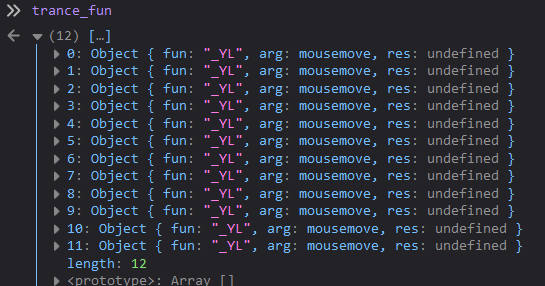
可以看出，我的鼠标移动操作一共触发了 12 次 mousemove 事件。
再看 trance_I 和 trance_S：
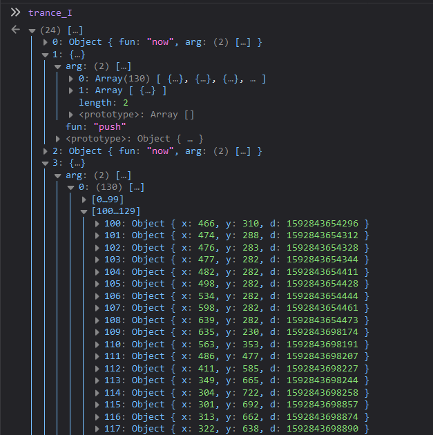
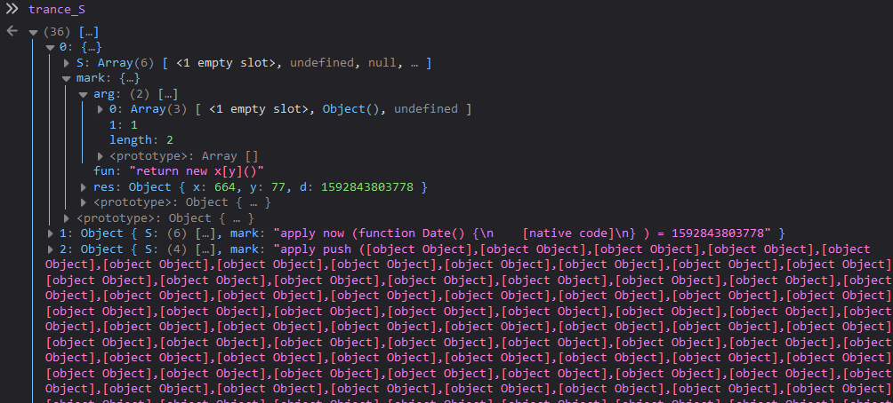
显然，是把鼠标的移动轨迹存放到了某个数组中。
我只是稍微移动了一下鼠标，就收集了这么多的轨迹，加上这些轨迹并没有在请求时被带上，那么它们自然也没有参与到请求签名的生成之中。由此可以猜测，这些监听事件去掉了应该也不影响网页的正常使用。而若留着它们，则会对逆向分析造成干扰。
所以，再改一下 js 代码把监听事件去掉（注意这样的代码有两处）：
if((I = S[A--]).x === _TM) {
S[++A] = _jt(r, I.pc, I.len, C, I.z, x);
} else if(I.name !== 'addEventListener'){
S[++A] = I.apply(x, C);
tranceI(I,[x, C]);
tranceS(S, 'apply ' + I.name + ' (' + x + ' ' + C + ') = ' + S[A]);
}修改后再次刷新页面，果然还可以正常拿到数据，并且现在不会再有监听事件的干扰了。
请求签名的组成
查看 trance_fun，直接拉到最后：
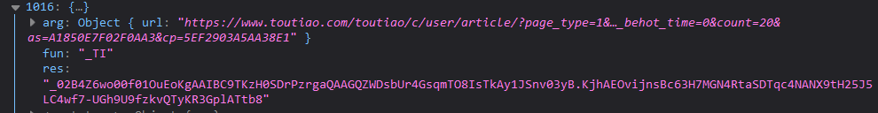
可以看到，调用 _TI，传入 URL，生成了一个字符串。看一眼抓到的包，可以发现它正好就是请求签名。
再往上翻，不难发现请求签名是由多个字符串拼接而成的。其中有一个字符串特别长，并且可以发现它是由 Cookie 中的 tt_scid 处理得到的。
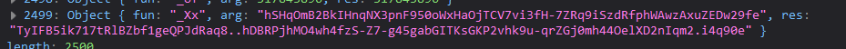
byted_acrawler的初始化
容易知道，acrawler.js 实际上定义了一个对象 byted_acrawler。
使用它之前会先通过 byted_acrawler.init 初始化，然后才调用 byted_acrawler.sign 生成签名。初始化的过程需要传入参数，这可能会影响签名的计算。
把 byted_acrawler.init Hook 一下：
var _init = byted_acrawler.init;
byted_acrawler.init = function() {
console.log('------------init: ' + JSON.stringify(arguments[0]) + '-----------------');
_init(arguments[0]);
}这样就可以拿到初始化参数 {"aid":24,"dfp":true}。
此外，通过抓包易知，页面会访问 xxbg.snssdk.com，并得到一行执行回调的代码。像这样：
GET https://xxbg.snssdk.com/websdk/v1/p?callback=_9076_1592919432466
-> _9076_1592919432466("J4GudCwFIH55mpDQ8zo=");这里也有一个字符串，它也可能会影响请求签名的计算结果。
为了观察初始化以及访问 xxbg.snssdk.com 对签名结果的影响，在本地写一个空白 HTML 并引入 acrawler.js，打开。
打开本地页面后，几个记录数组都为空。通过抓包软件可以看到，此时也并未访问 xxbg.snssdk.com。
控制台执行 byted_acrawler.init({"aid":24,"dfp":true})，容易发现对 xxbg.snssdk.com 的访问是在初始化的过程中执行的。
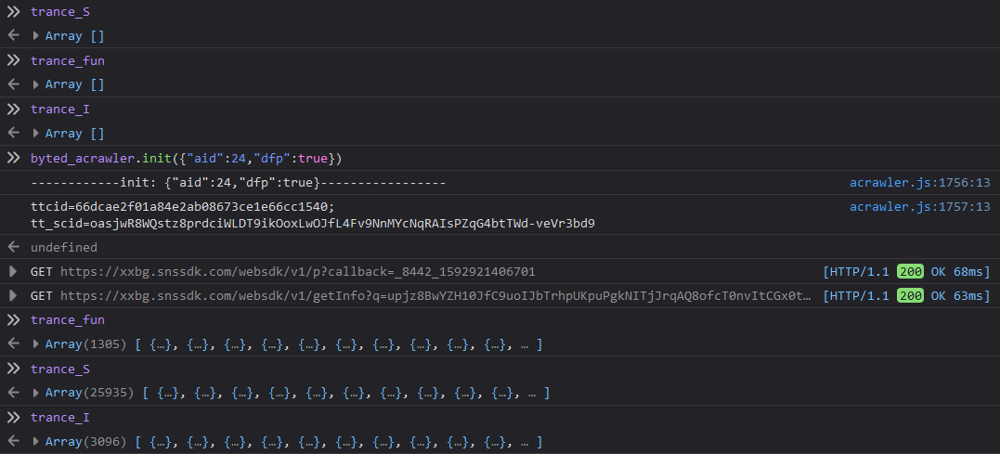
通过请求调用堆栈，可以发现这个请求是在 S[++A] = I.apply(x, C) 处执行的。
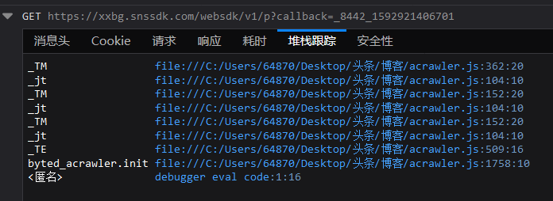
直接查看 trance_I 来定位请求的发起并不方便。再改一下代码：
if((I = S[A--]).x === _TM){
S[++A] = _jt(r, I.pc, I.len, C, I.z, x)
} else if(I.name !== 'addEventListener') {
console.log(I.name);
S[++A] = I.apply(x, C);
tranceI(I,[x, C]);
tranceS(S, 'apply ' + I.name + ' (' + x + ' ' + C + ') = ' + S[A]);
}刷新页面，可以发现是在 appendChild 函数之后发起了请求。
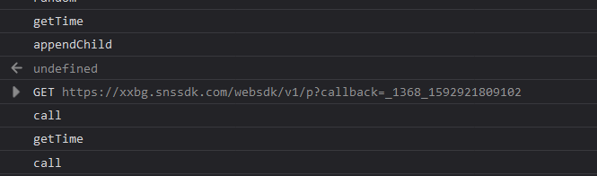
现在才来看 trance_I：
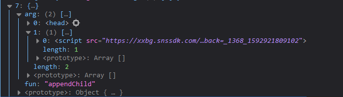
显然，这里是通过动态增加 script 标签的方式来访问 API 并执行回调。
此时并不能通过控制台访问到这个回调函数。
刷新页面，打上条件断点 I.name == 'appendChild'，然后再次执行初始化。此时会断在 S[++A] = I.apply(x, C) 处，单步执行一次，此时请求已经发出，并且在控制台中可以访问到回调函数。
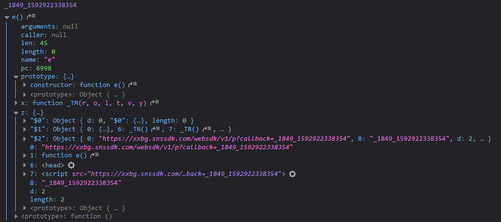
它在 JS 文件中对应下面这一段代码内的函数 e：
oprand = _ju(r, o), I = oprand[1], S[A] = function (a, b) {
var d = function e() {
let res = _jt(tacStr, arguments.callee.pc, arguments.callee.len, arguments, _Sj, this);
tranceFun(arguments.callee.name, arguments, res);
return res;
};
return d.pc = a, d.len = b, d.x = _TM, d.z = t, d;
}(o + 6, I - 4), o += 2 * I - 2;在 let res = _jt(tacStr, arguments.callee.pc, arguments.callee.len, arguments, _Sj, this); 这一行打上断点，然后 F8。
清空记录数组，然后在 return res; 这一行打上断点，再次 F8。
此时在控制台中已经无法访问回调函数了，但是我们可以通过记录数组查看 _1849_1592922338354("TZP68aNkQMIdQ1DhdRM=") 到底做了些什么。
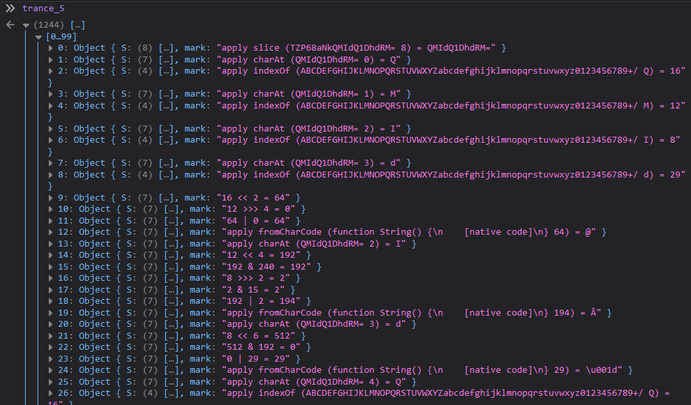
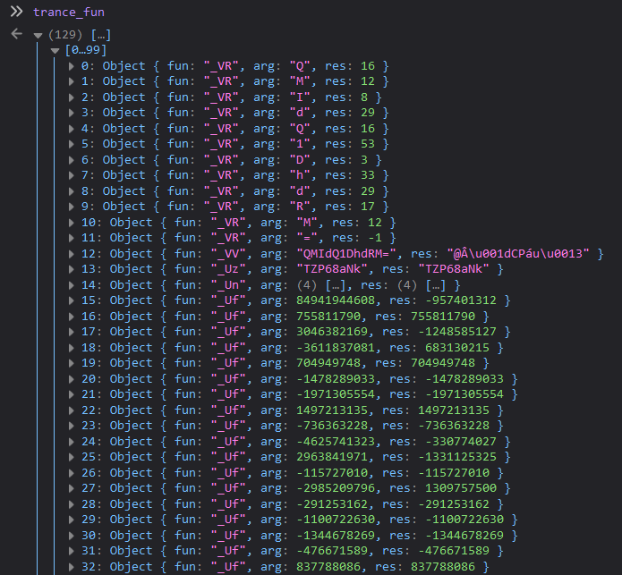
稍作分析即可发现，回调函数大概做了这么些事情：
- 从
TZP68aNkQMIdQ1DhdRM=中截取后半段QMIdQ1DhdRM=，将其作为函数_VV的参数，得到@Â\u001dCPáu\u0013 - 利用
TZP68aNkQMIdQ1DhdRM=的前半段TZP68aNk和后半段处理后的字符串@Â\u001dCPáu\u0013生成一个特征值 - 若干次执行函数
_Uf，将上面得到的特征值转换成另一个数 - 使用 canvas 构造一张以文本
\u0098\u0011 ½为内容的图片，并获取图片的 Base64 编码字符串 - 使用图片 Base64 和若干次执行
_Uf得到的数，再生成另一个数
其中，\u0098\u0011 ½ 是之前将密文数组解密后得到的固定字符串之一。
继续执行代码，直到初始化完成，trance_S 中将得到两万多条记录，trance_fun 中也有一千多条。
查看 trance_fun 可知，除了访问 xxbg.snssdk.com 并执行回调函数以外，整个初始化过程似乎只是计算了一次 _Xx(tt_scid)。
那么，如果不初始化，是否能正常地生成请求签名，并通过校验呢？
将 byted_acrawler.init 赋值为一个空函数，然后刷新某条的页面，我惊讶地发现，居然真的不需要初始化！emmm……也不排除后续版本又会改来改去啦。

请求签名逐段分析
为简单起见，先清空 cookie，排除 tt_scid 等值的影响。对它们的分析不妨放到之后再做。
刷新页面后，先执行一次 cleanTrance，并把 dcp 设置为 true，然后往下滚，触发一次列表查询。
这一次，得到了非常简单的结果：
_TI({url:"https://www.toutiao.com/toutiao/c/user/article/?page_type=1&…me=1592921783&count=20&as=A1C50E4FB2D246B&cp=5EF2F254060BDE1"})
== "_02B4Z6wo00f01UeM5mQAAIBDWTr108VwoFFHjeLAAA8S38"往后就是分析 trance_S 等几个数组，过程简单但冗长，实在是懒得为了写博客重新做一遍了……哪天闲着蛋疼了再把整个过程写一下吧。
分析插桩日志，可以很容易地搞懂整个签名生成过程。
最终也会发现，__ac_signature 的生成用的是同一个算法。